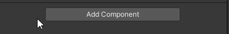
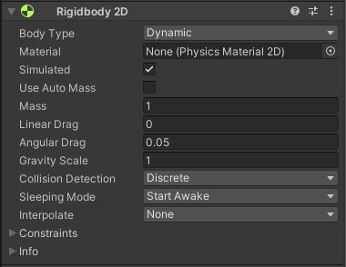

Les composantes sont une partie essentielle de Unity. En effet, c'est grâce à elles que nous pouvons interagir avec les objets. Voici plus d'informations sur les principales composantes qui vous serons utiles.
Ajouter des composantes dans Unity est simple. Il suffit de choisir l'objet auquel on veut faire un ajout dans la Hierarchy. Ensuite, on va dans la fenêtre Inspector et on appuie sur le bouton Add Component qui est tout en bas. On peut ensuite faire une recherche ou encore sélectionner une composante dans la liste.
Cette composante est présente sur presque tous les GameObjects. Elle a trois principaux paramètres. Le premier nous permet d'ajuster la position de l'objet, le deuxième sa rotation et le troisième sa taille.
La composante Sprite Renderer permet d'afficher des graphiques en 2D qu'on peut animer. Ce peut être des personnages, un ennemi, un environnement,...
Le paramètre Sprite permet de choisir quel visuel est affiché.
Le paramètres Color permet de modifier la couleur du Sprite. Si on fait un Sprite en blanc et gris celui-ci prendra la couleur du paramètre Color. Sinon, ce sera une addition des couleurs déjà présentes avec le Color.
Le paramètre Flip est utile, il nous permet de modifier l'orientation du sprite. On peut l'utiliser lors des déplacements pour faire aller notre personnage à gauche, puis à droite sans avoir à changer de visuel.
Dans additional Settings, il y a le paramètre Sorting Layer. Celui-ci nous sert à créer des calques et à placer nos objets sur ceux-ci. Dans le cadre d'un jeu, on pourrait créer un calque Fond et un autre Joueur. Ainsi, on pourrait placer le fond dans ce calque et s'assurer qu'il sera en tout temps derrière le reste du jeu. Le deuxième paramètre Order in Layer permet de classer les calques qui sont sur un même layer pour savoir lequel devrait s'afficher devant. Un nombre élevé est devant un nombre plus petit.
Que ce soit Box, circle ou encore capsule collider 2D, tout ces objets ont la même utilité. On choisira la forme selon l'objet associé au Collider. Le collider sert à délimiter notre objet. Ainsi, si notre objet entre en collision avec un autre, c'est à la jonction des colliders des deux objets que la collision se fera. Pour cette raison, il est important de sélectionner un Collider qui a une forme similaire à l'objet sur lequel on veut appliquer des limites.
Le paramètre Edit Collider nous permet de modifier manuellement la taille du collider. Lorsqu'on l'active, le collider est représenté par un carré vert et il a de petites poignées qu'on peut déplacer pour l'ajuster. On peut également utiliser les paramètres offset et size si on a des mesures précises en tête pour le Collider.
Le paramètre is Trigger modifie la façon dont le Collider agit. En temps normal, le collider est une barrière qu'on ne peut pas franchir. Lorsqu'on active la fonction is Trigger, on peut alors entrer et sortir du collider sans problème, l'utilité est qu'on pourra dans un script C# détecter l'entrée et la sortie du joueur avec la fonction OnTriggerEnter et OnTriggerExit. Cela est utile pour créer des zones et déclencher des interactions, par exemple un son lorsque j'entre dans une zone.
Les objets box, sphere, capsule et mesh collider sont tous des colliders qui fonctionnent de la même façon que les Collider 2D à l'exception qu'ils sont en trois dimensions. Le mesh Collider est un peu différent, un de ses paramètres d'entrée est Mesh. Ainsi, on doit lui assigner un Mesh qui lui servira à détecter les collisions. Attention, plus votre Mesh 3D a de points, plus cela demande de la puissance de calcul. Ainsi, fréquemment on utilise une combinaison de Colliders plus simples, par exemple Sphere + box pour créer des Colliders complexes.
La composante RigidBody permet à un Sprite d'être affecté par la physique. C'est notamment en ajoutant cette composante combinée à un Collider 2D que nous pourrons détecter les collisions de notre joueur avec les objets qui l'entourent. Lorsqu'on parle de physique, on peut parler de gravité, ainsi l'objet pourra être affecté par la gravité selon la configuration qu'on fait.
Le paramètre Body type nous permet de choisir quel type de RigidBody on souhaite avoir. Static fait référence à un objet qui ne bougera pas, on ne pourra pas entrer en collision avec celui-ci. Kinematic peut être utilisé avec un objet que vous bougez avec un script. Ainsi, l'objet sera statique sauf si vous donnez une autre consigne. Les collisions pourront se faire. Finalement, Dynamic permet à l'objet d'être affecté pas la physique, ainsi si vous faites sauter votre personnage, la gravité sera utilisée pour le faire redescendre. Nous allons voir les autres paramètres de Dnymaic, puisqu'il contient plus de paramètres que les autres.
Le paramètre Material nous permet d'affecter un matériel physique à l'objet, on pourrait par exemple lui assigner un matériel rebondissant.
Le paramètre Mass fait référence à la masse de l'objet, il est utilisé pour calculer les effets de la gravité sur l'objet. Vous pouvez le modifier et voir comment votre objet réagit
Les paramètres drag peuvent être ajustés pour que l'objet ait du damping ou non. Le damping est un amortissement, il sert à ralentir le mouvement à la fin plutôt que d'arrêter de façon nette.
Le paramètre gravity nous permet d'appliquer le poids de la gravité sur notre personnage.
Le paramètre Contraints nous permet d'empêcher le mouvement ou la rotation de l'objet dans certaines directions. Vous pouvez cocher les axes dans lesquels votre objet ne doit pas se déplacer.
Le RigidBody pour les objets 3D est très similaire au 2D. Voici les grandes différences:
Le paramètre Automatic center of mass nous permet de choisir l'emplacement du centre de la masse lorsqu'il est décoché.
Le paramètre is Kinematic est similaire au choix de body type en 2D. Lorsqu'on le coche, notre objet ne sera plus affecté par la physique, il bougera seulement grâce aux scripts.
La composante New Script nous permet de créer un nouveau Script C# associé à l'objet. Lorsqu'on a crée, on doit donner un nom à notre Script.
La composante Video Player permet de joueur une vidéo sur un objet, qu'il soit en 3D ou en 2D. Le premier paramètre, Source nous permet de choisir si la vidéo est dans le projet ou en ligne. Je recommande d'utiliser des vidéos dans le projet. Dans ce cas, dans Video Clip, il faut glisser le vidéo que vous voulez faire jouer.
La boîte Play on Awake vous permet de choisir si la vidéo doit jouer dès que le GameObject est activé. Si vous ne la cochez pas, vous devrez activer le Play par un script ou un événement.
La boîte Wait for first frame permet de décider si on attend que le vidéo soit chargé ou non avant de le jouer. Si on attends qu'il soit chargé, on le verra au complet, mais le démarrer est plus long. Si on attends pas, il se peut qu'on passe quelques frames.
La boîte Loop permet de jouer ou non le vidéo en Boucle.
La boîte Skip on Drop permet au vidéo de jouer en temps réel, quitte à ne pas montrer certains frames si on a des bogues. Décocher cette case fera en sorte qu'on verra tous les frames de la vidéo, mais elle pourrait jouer pendant plus lontemps.
Playback Speed permet d'ajuster la vitesse de lecture de la vidéo. Attention, si elle est de 0, la vidéo ne jouera pas!
Render mode est un paramètre qui peut être modifié selon à quel endroit vous voulez faire jouer la vidéo, habituellement, on garde material Override pour jouer le vidéo sur la texture de l'objet sur lequel il est. Renderer qui est le paramètre en dessous fait justement habituellement référence au Renderer de l'objet sur lequel on rend la vidéo, donc lui-même.
Audio Output mode nous permet de sélectionner si notre vidéo joue de l'audio ou non.